mesh-2-truths-1-lie
Games · Conversation & bluffing
icebreakersgame nightsmall groups
mesh-2-truths-1-lie
Browser-local collaboration
201 recorded apps for games, facilitation, creative play, and real-world coordination. Every card is a real two-peer recording.
Filter by purpose, then open a live app.
Showing all 201 demos
Games · Conversation & bluffing
mesh-2-truths-1-lie

Privacy & utilities · Identity & private exchange
mesh-2fa-bridge
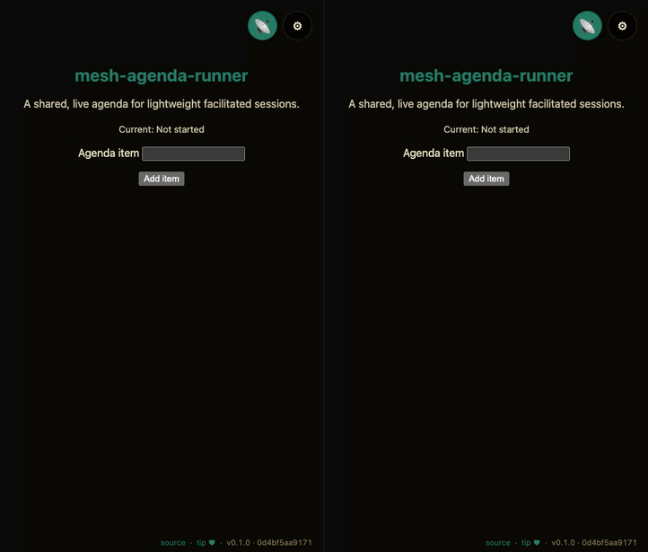
Productivity · Coordination & planning
mesh-agenda-runner

Privacy & utilities · Identity & private exchange
mesh-allowance

Privacy & utilities · Identity & private exchange
mesh-anonymous-qa


Social · Celebration & support
mesh-applause-bracket


Devices & spaces · Camera & vision
mesh-attendance-stamp

Social · Conversation & connection
mesh-bench-archive
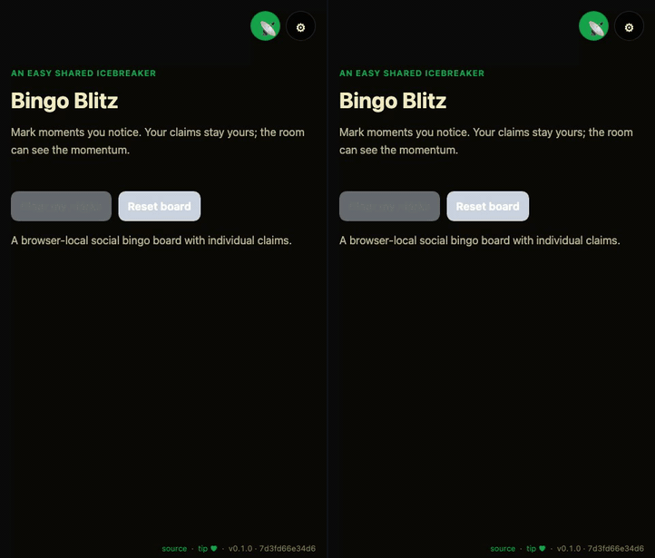


Decisions · Selection & ranking
mesh-book-club-lottery
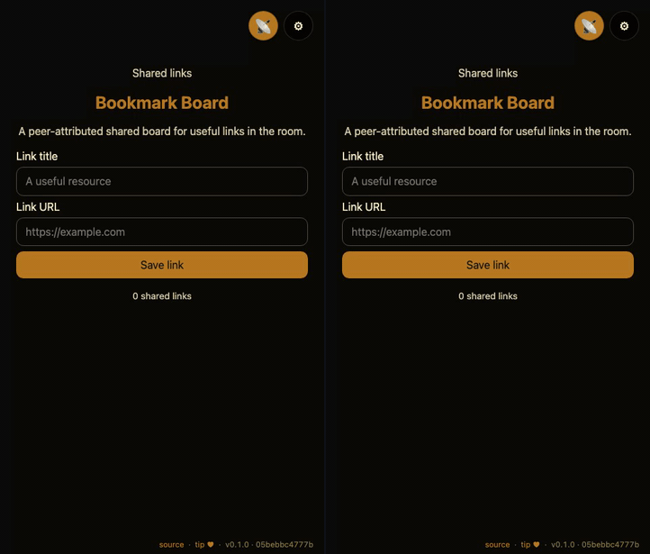
Productivity · Coordination & planning
mesh-bookmark-board

Community · Neighbours & mutual aid
mesh-borrow-board


Work & learning · Collaboration & practice
mesh-brain-write

Coordination · Planning & logistics
mesh-breakout-pairs
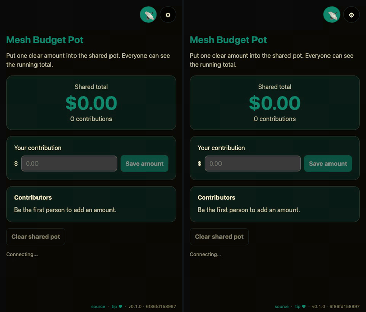

Work & learning · Collaboration & practice
mesh-bus-factor

Work & learning · Collaboration & practice
mesh-business-card

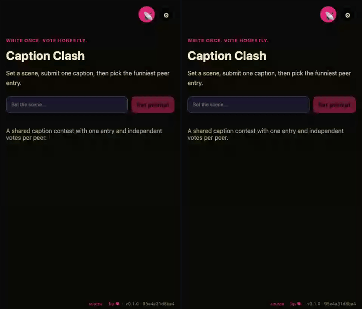
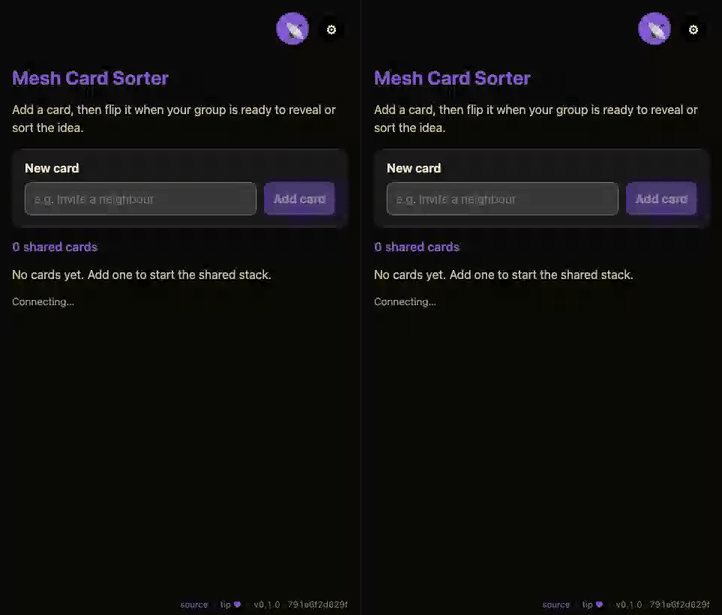
Decisions · Selection & ranking
mesh-card-sorter

Community · Neighbours & mutual aid
mesh-carpool-bingo
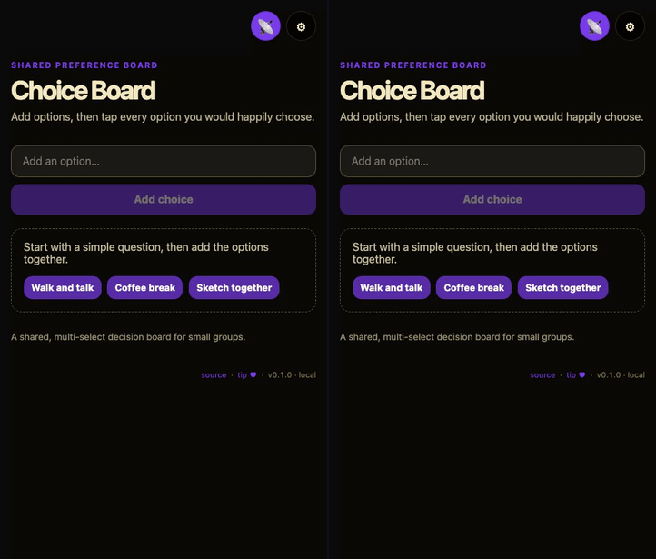


Devices & spaces · Audio & haptics
mesh-clap-track


Privacy & utilities · Links, QR & transfer
mesh-clipboard-bridge
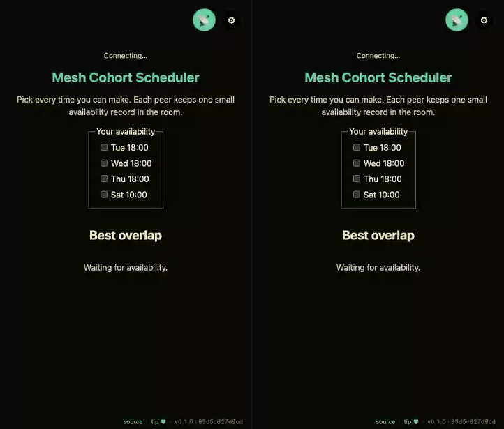
Productivity · Coordination & planning
mesh-cohort-scheduler

Social · Conversation & connection
mesh-compliment-roulette

Social · Conversation & connection
mesh-conversation-cards
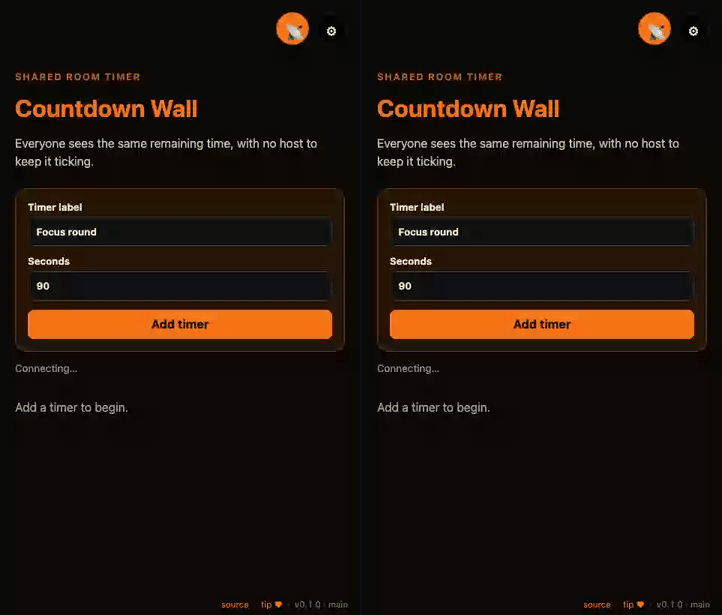
Coordination · Planning & logistics
mesh-countdown-wall


Social · Conversation & connection
mesh-daily-question


Decisions · Voting & consensus
mesh-debate-clock
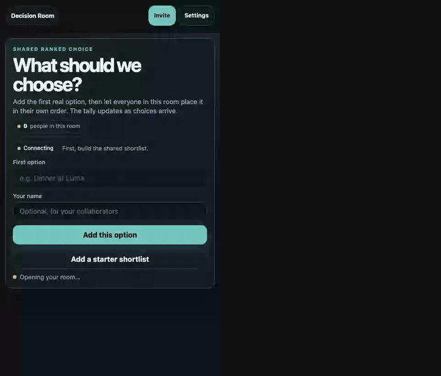
Productivity · Decision making
mesh-decision-room

Devices & spaces · Motion & orientation
mesh-direction-finder


Wellbeing · Social energy & check-ins
mesh-energy-curve
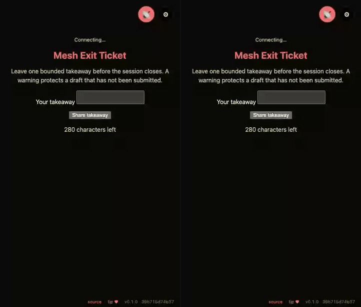

Games · Arcade & reaction
mesh-exquisite-corpse

Devices & spaces · Camera & vision
mesh-eye-contact

Devices & spaces · Camera & vision
mesh-face-grid

Community · Neighbours & mutual aid
mesh-favor-bank

Devices & spaces · Location & field tools
mesh-find-my-family

Social · Conversation & connection
mesh-finger-relay

Devices & spaces · Shared displays & installations
mesh-firefly-walk

Decisions · Voting & consensus
mesh-fist-of-five

Games · Party & tabletop
mesh-five-second-rule

Creative · Performance & sound
mesh-flash-mob

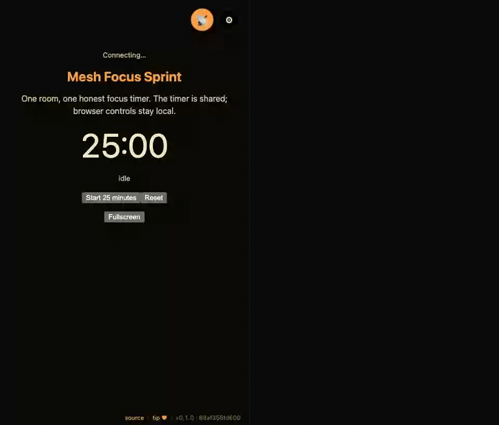

Games · Conversation & bluffing
mesh-fortune-cookie

Social · Celebration & support
mesh-fundraiser-bar

Privacy & utilities · Identity & private exchange
mesh-gift-exchange

Wellbeing · Mindfulness & focus
mesh-habit-sprint

Devices & spaces · Motion & orientation
mesh-handshake-chain

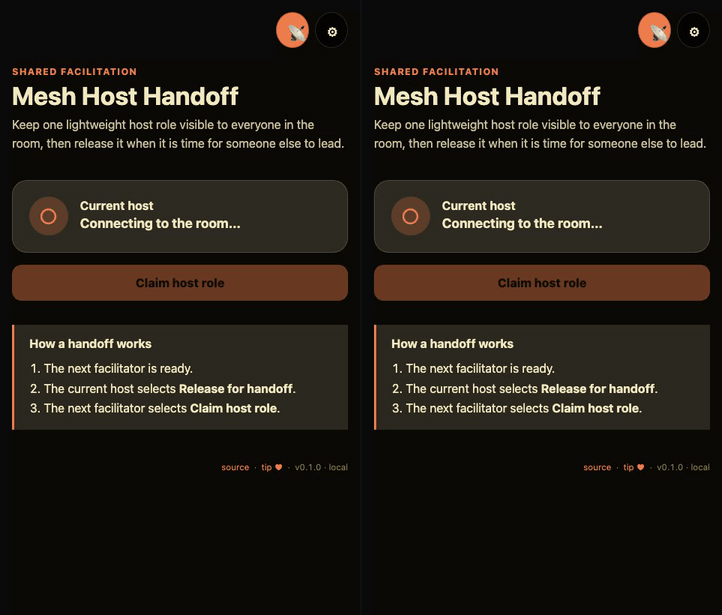
Work & learning · Facilitation & reflection
mesh-host-handoff


Social · Conversation & connection
mesh-icebreaker-bingo

Decisions · Voting & consensus
mesh-idea-market

Work & learning · Collaboration & practice
mesh-improv-director
Privacy & utilities · Identity & private exchange
mesh-invite-pocket


Devices & spaces · Shared displays & installations
mesh-kiosk-wall


Creative · Visual making
mesh-light-paint

Devices & spaces · Shared displays & installations
mesh-lightning-flash
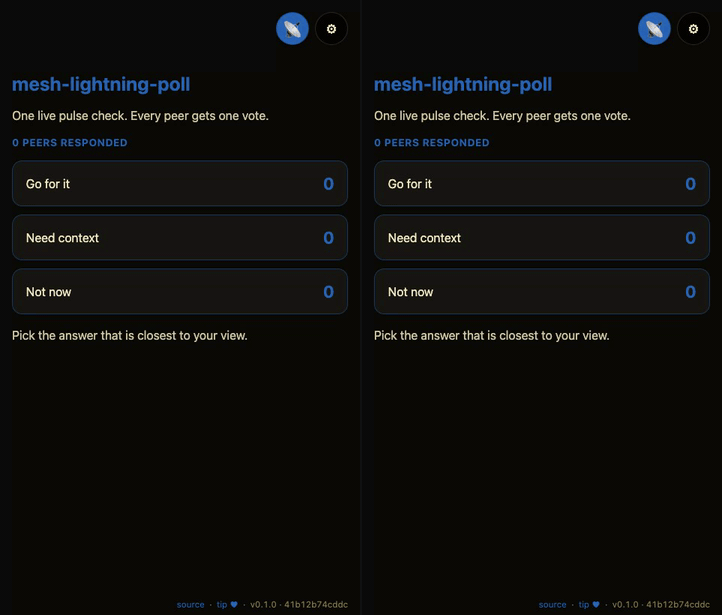
Decisions · Voting & consensus
mesh-lightning-poll

Privacy & utilities · Links, QR & transfer
mesh-link-share

Decisions · Voting & consensus
mesh-live-poll

Community · Neighbours & mutual aid
mesh-lost-found
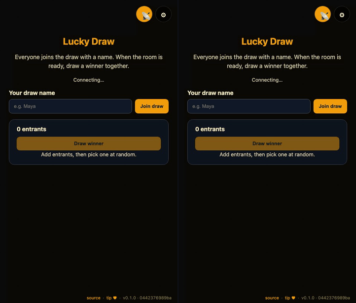

Decisions · Selection & ranking
mesh-lunch-roulette


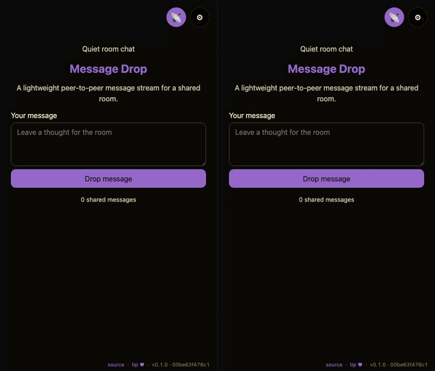


Devices & spaces · Audio & haptics
mesh-mic-drop-quiz
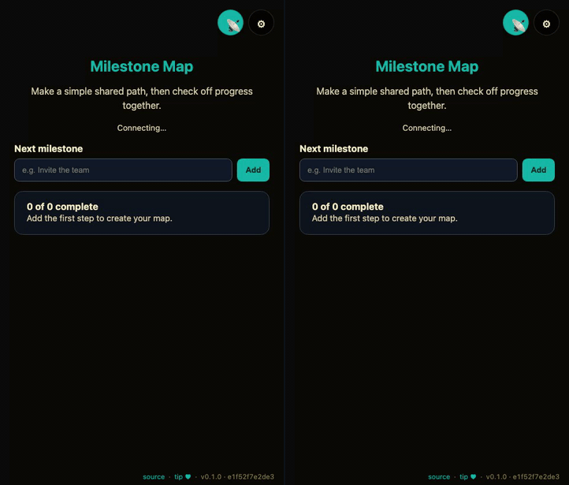


Privacy & utilities · Links, QR & transfer
mesh-network-builder

Games · Conversation & bluffing
mesh-never-have-i

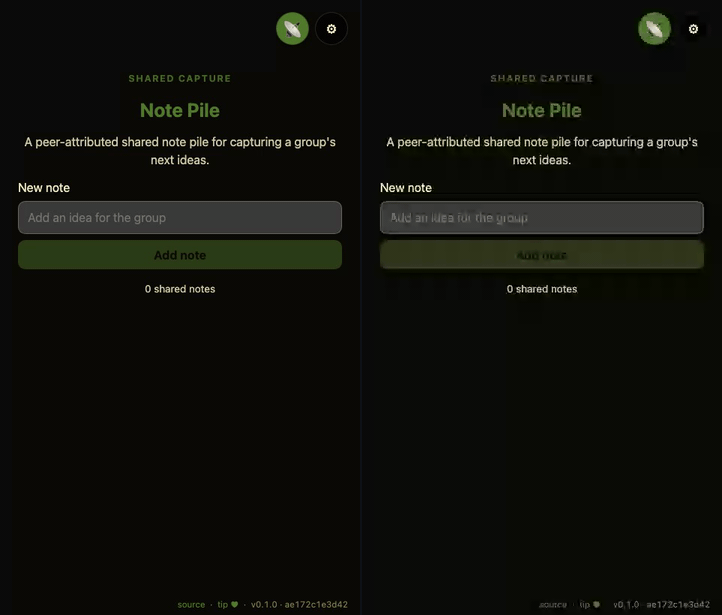
Work & learning · Facilitation & reflection
mesh-note-pile
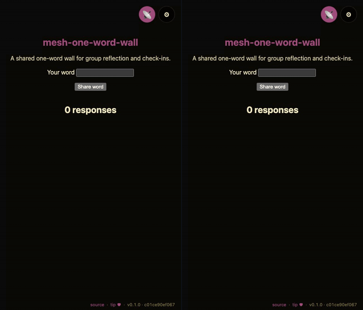
Wellbeing · Social energy & check-ins
mesh-one-word-wall
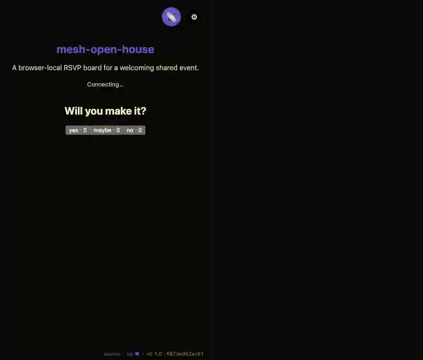

Devices & spaces · Motion & orientation
mesh-orientation-mosaic

Decisions · Voting & consensus
mesh-overrated-underrated
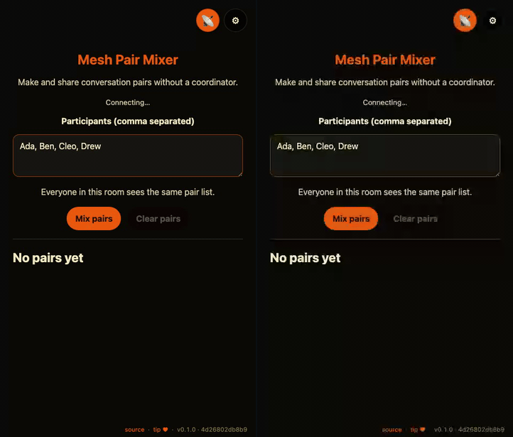

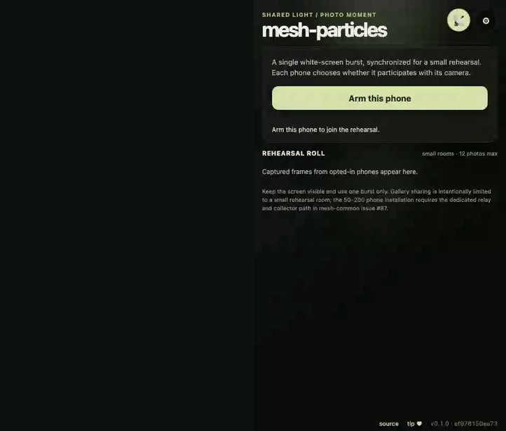
Devices & spaces · Shared displays & installations
mesh-particles


Privacy & utilities · Identity & private exchange
mesh-passport

Decisions · Voting & consensus
mesh-petition


Work & learning · Collaboration & practice
mesh-pitch-pong
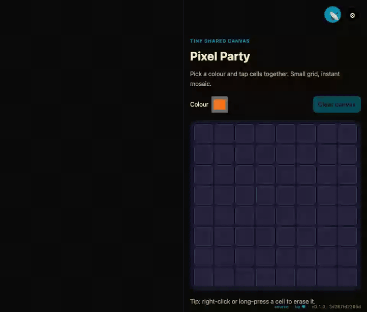
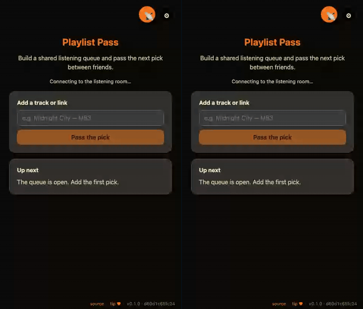

Wellbeing · Mindfulness & focus
mesh-pomodoro-room


Decisions · Voting & consensus
mesh-prediction-pool

Privacy & utilities · Identity & private exchange
mesh-privacy-drop
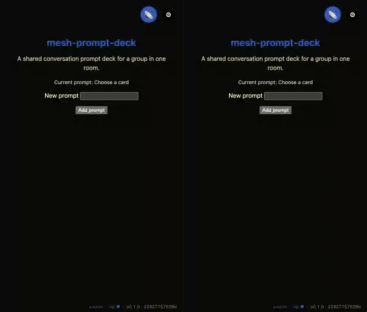

Work & learning · Collaboration & practice
mesh-prompt-ladder

Devices & spaces · Camera & vision
mesh-pulse-photo


Social · Conversation & connection
mesh-questions-only


Games · Arcade & reaction
mesh-quick-draw-duel

Wellbeing · Mindfulness & focus
mesh-quiet-cheer

Wellbeing · Mindfulness & focus
mesh-quiet-quest

Decisions · Voting & consensus
mesh-ranked-vote
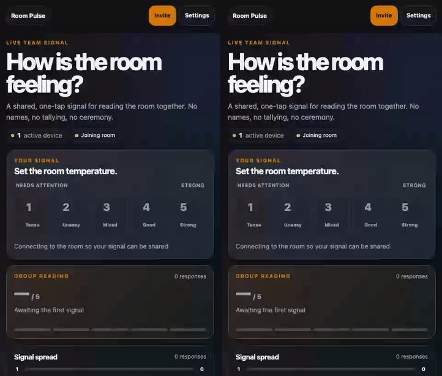
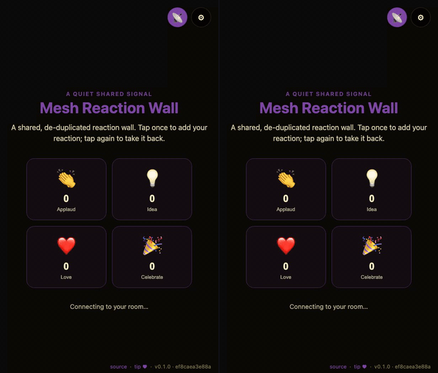
Social · Celebration & support
mesh-reaction-wall

Work & learning · Collaboration & practice
mesh-recipe-relay

Work & learning · Collaboration & practice
mesh-remote-retro-standup

Work & learning · Collaboration & practice
mesh-retro

Creative · Writing & storytelling
mesh-roast-or-toast
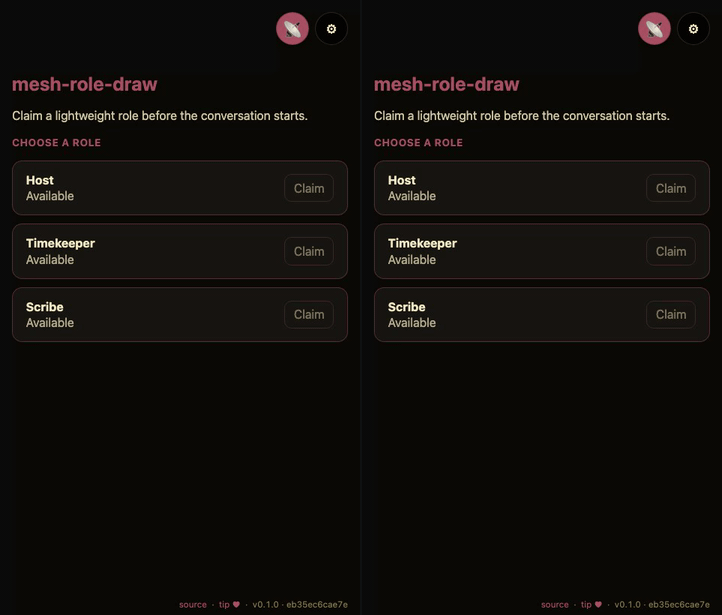

Work & learning · Facilitation & reflection
mesh-room-norms

Creative · Performance & sound
mesh-room-soundtrack
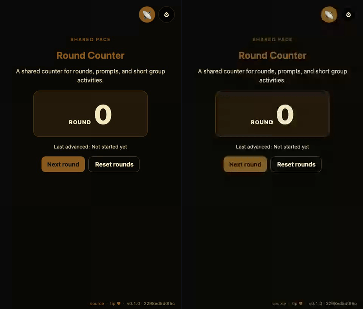

Devices & spaces · Location & field tools
mesh-route-share


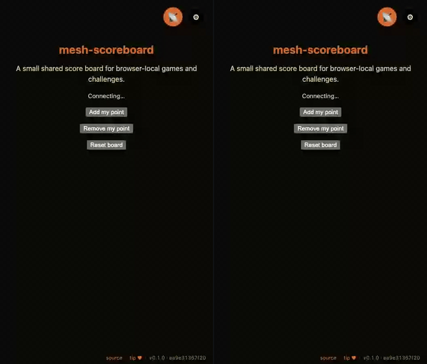

Decisions · Voting & consensus
mesh-secret-ballot


Devices & spaces · Motion & orientation
mesh-shake-dice
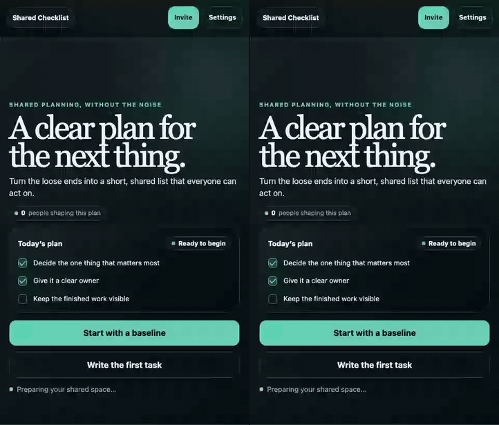
Coordination · Planning & logistics
mesh-shared-checklist

Social · Conversation & connection
mesh-shared-timer

Devices & spaces · Shared displays & installations
mesh-shared-window

Wellbeing · Mindfulness & focus
mesh-shhh-meter

Decisions · Voting & consensus
mesh-show-of-hands

Work & learning · Facilitation & reflection
mesh-shower-thoughts

Wellbeing · Mindfulness & focus
mesh-silence-counter

Decisions · Voting & consensus
mesh-silent-vote

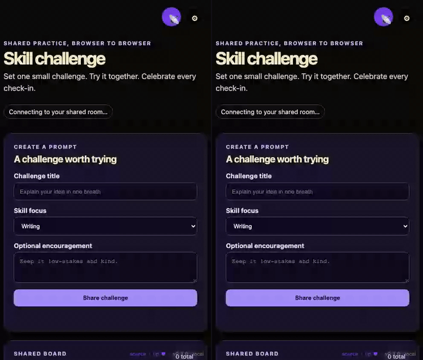


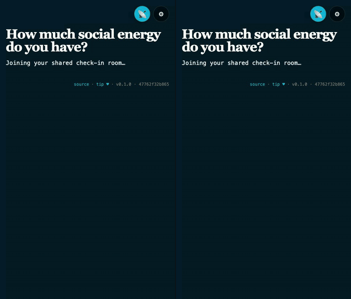
Wellbeing · Social energy & check-ins
mesh-social-battery


Coordination · Planning & logistics
mesh-split-the-bill


Work & learning · Collaboration & practice
mesh-standup

Devices & spaces · Motion & orientation
mesh-step-circle

Devices & spaces · Motion & orientation
mesh-step-relay
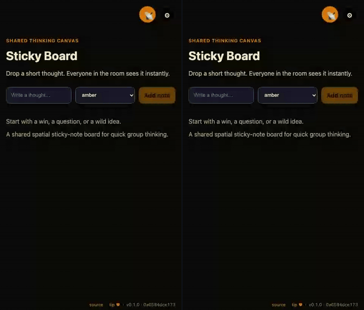
Work & learning · Collaboration & practice
mesh-sticky-board

Creative · Writing & storytelling
mesh-storyworm

Wellbeing · Mindfulness & focus
mesh-stretch-class


Devices & spaces · Audio & haptics
mesh-tap-symphony

Social · Celebration & support
mesh-thank-you-token


Devices & spaces · Motion & orientation
mesh-tilt-marble

Creative · Writing & storytelling
mesh-time-capsule

Social · Celebration & support
mesh-toast-stack

Privacy & utilities · Identity & private exchange
mesh-trade-cards

Devices & spaces · Location & field tools
mesh-treasure-hunt

Devices & spaces · Motion & orientation
mesh-tremor-map


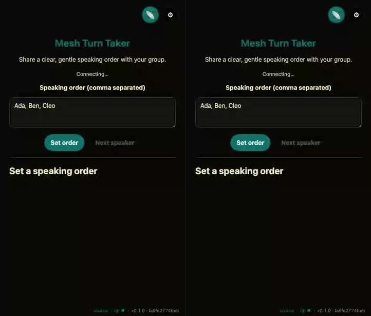

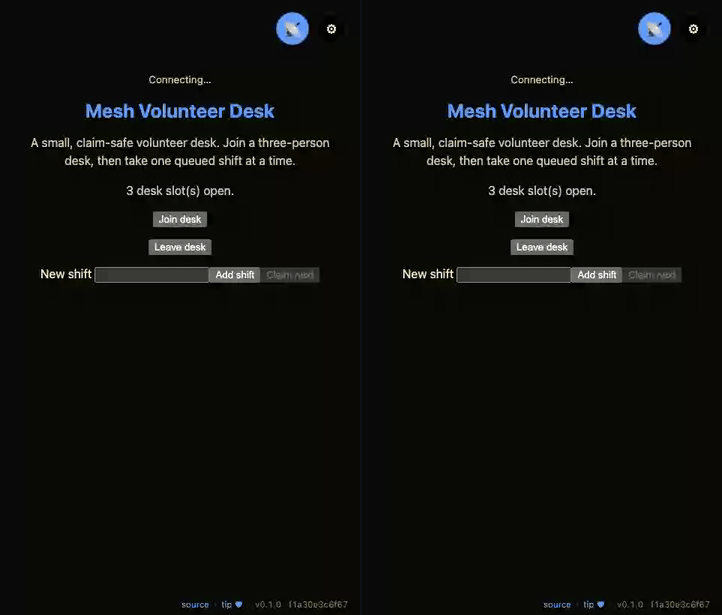

Coordination · Planning & logistics
mesh-volunteer-shift

Devices & spaces · Shared displays & installations
mesh-watch-party-sync

Devices & spaces · Motion & orientation
mesh-wave-canvas

Games · Conversation & bluffing
mesh-werewolf-roles


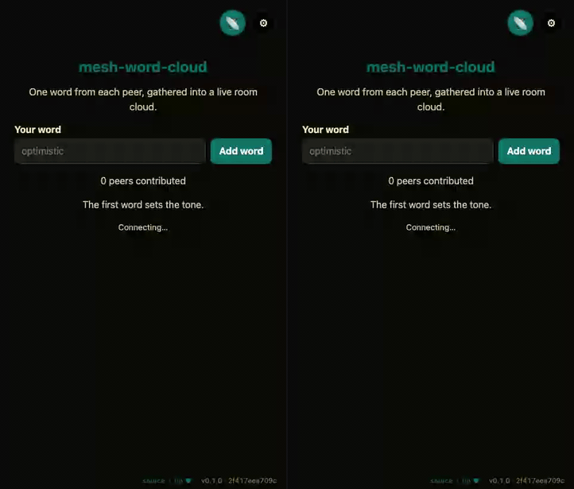
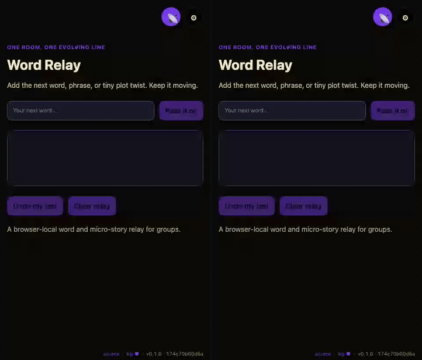

Games · Conversation & bluffing
mesh-would-rather